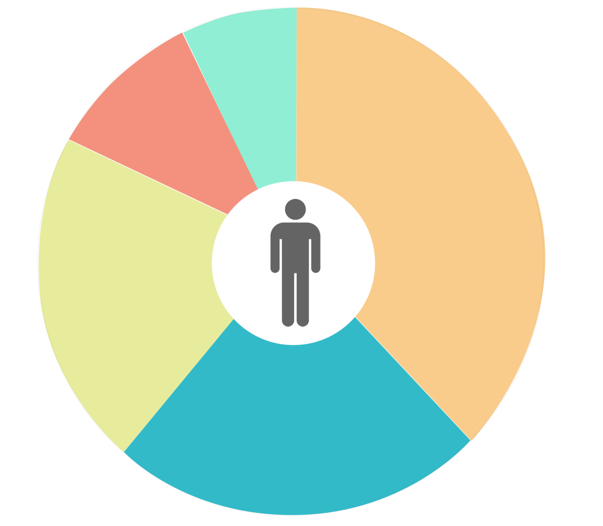

The Problem
Our current health systems main focus is on clinical care. However, it is necessary to view health as a holistic measure of an individual’s entire living situation and life experience.
The determinants of health extend far beyond medical care and can be used to improve patient care within both the clinical and public health space.
Explore the Determinants

The Determinants
The determinants of health act as a holistic way for clinicians and patients to view how different aspects of our lives affect our health.
After collecting over 160 metrics from 10 different healthcare organizations, we were able to break down the determinants into five separate groups, as well as determine their affect on health.
Individual Behavior
Our individual behavior affects us the most with a 38% stake in our overall health. From our psychological assets to our sleep patterns to our anxiety levels, the behavior we exhibit each day is a critical determinant for our physical and mental health and well being.
The individual behavior determinant is divided into 7 macrodeterminant categories, 15 microdeterminants, and is supported by 13 recorded metrics.
View the divisions
Individual Behavior
Below is the break down of the individual behavior determinant listing the macrodeterminants and their related microdeterminants and metrics.
Negative Mood and Affects
Other Risk Related Behaviors
Social Circumstances
The social circumstances we grew-up in, as well as the circumstances of our adult lives form a 23% stake in our overall health. An individual’s social status, early childhood development and culture all impact our social development and our personal health.
The social circumstances determinant is divided into 11 macrodeterminant categories, 14 microdeterminants and is supported by 7 recorded metrics.
View the divisions
Social Circumstances
Below is the break down of the social circumstances determinant listing the macrodeterminants and their related microdeterminants and metrics.
Genetics and Biology
From a genomic standpoint, undertanding our genetic make-up is important when it comes to our overall health, but it is not cost effective to sequence everyone’s genome at this point in time. Beyond genetics, our physical body structure and function also contribute to our health, resulting in a 21% total impact.
The genetics and biology determinant is divided into 3 macrodeterminant categories, 15 microdeterminants, and is supported by 12 recorded metrics.
View the divisions
Genetics and Biology
Below is the break down of the genetics and biology determinant listing the macrodeterminants and their related microdeterminants and metrics.
Medical Care
As a country, we solely rely on medical data when creating health records for patients. However, most people fail to realize that clinical care only contributes to a small portion of our overall health (11%). While this determinant is still important, it shouldn’t be the only measure used.
The medical care determinant is divided into 4 macrodeterminant categories, 6 microdeterminants, and is supported by 3 recorded metrics.
View the divisions
Medical Care
Below is the break down of the medical care determinant listing the macrodeterminants and their related microdeterminants and metrics.
Physical Environment
From the infrastructure of our cities to the quality of the air we breathe, the physical environment is a important factor that contributes to our health, but it has the smallest impact at only 7%.
The physical environment determinant is divided into 4 macrodeterminant categories, 16 microdeterminants, and is supported by 4 recorded metrics.
View the divisions
Physical Environment
Below is the break down of the physical environment determinant listing the macrodeterminants and their related microdeterminants and metrics.
Buy the SDoH Poster
The SDoH poster is available for purchase for $150. The poster comes framed and is printed at 24"x 36"
Buy Now
Download the Free PDF
Download: SDoH-poster.jpg
Methodology
A list of determinants were collected from 10 different health organizations and were used to create a single combined list of determinants.
The following categories of health determinants were chosen due to their consistency across most organizations: genetics, medical care, social circumstances, environment, and individual behavior.
The relative contribution of each of the determinant categories to one’s health was found by averaging the estimated values referenced by each primary source.
About this data
Studied Health Organizations
-National Institute of Health
-National Committee for Quality Assurance
-National Committee on Vital and Health Statistics
-Kentucky Cabinet for Health and Family Services
-College of Nursing and Health, Wright State University
-National Academy of Scienes
The Math Behind the Determinants
Each determinant category was then averaged based on the values from each of the aforementioned sources.
The ratio for each determinant was then found by taking the average values found for each of the determinant categories and dividing them by the total determinant value.
The final percentages are as follows.
Behavioral determinants at 38%
Social determinants at 23%
Genetic determinants at 21%
Medical care determinants at 11%
Environmental determinants at 7%
Applications
The implementation of the determinants of healthcare would improve public health across the nation. By having healthcare workers take greater care in learning about a patient’s life experience and understanding how these experiences impact their overall health will result in better treatment and diagnoses.
The determinants of healthcare will also help establish a standard health record (SHR) that all medical personnel would use when meeting with patient’s. The creation of a SHR would greatly help with public research on population health, as well as the healthcare system as a whole. The SHR would also result in massive amounts of data that would be available for clinicians, students, patients and laboratories across the country.